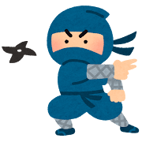
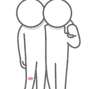

NARUTO
-
この漫画の紹介
『NARUTO -ナルト-』は、落ちこぼれの忍者である主人公、うずまきナルトが、里の長である「火影（ほかげ）」を目指し、仲間たちとの絆を深めながら成長していく物語です。 物語の舞台は、忍者が存在する架空の世界。ナルトが生まれた直後、彼の体内には里を襲った強大な尾獣「九尾の狐」が封印されます。このため、里の人々からは忌み嫌われ、孤独な幼少期を過ごします。 しかし、ナルトは決して諦めず、持ち前の明るさと真っ直ぐな性格で、少しずつ周囲の信頼を得ていきます。第七班として共に任務をこなす仲間、うちはサスケや春野サクラ、そして担当上忍のはたけカカシとの出会いを経て、ナルトは仲間との絆の大切さ、忍としての生き方、そして「火影」という夢の意味を学んでいきます。 物語は、友情、努力、そして忍者の世界に渦巻く陰謀や壮絶な戦いを描きながら、ナルトが成長し、やがて里の英雄となるまでの道のりを壮大なスケールで描いています。
漫画としての『NARUTO -ナルト-』の紹介
『NARUTO -ナルト-』は、岸本斉史による日本の少年漫画作品です。1999年から2014年まで『週刊少年ジャンプ』で連載され、全72巻が刊行されました。主な特徴と魅力:
魅力的なキャラクター: ナルトをはじめ、クールなライバルであるサスケ、しっかり者のサクラ、飄々としたカカシ先生など、個性豊かで魅力的なキャラクターが多数登場します。彼らの成長や葛藤が、物語に深みを与えています。 熱いバトル描写: 忍術や体術を駆使したバトルシーンは迫力満点で、読者を惹きつけます。戦略的な要素も多く、単なる力比べではない面白さがあります。 練りこまれた世界観: 忍者の里、尾獣、瞳術、チャクラといった独自の概念が詳細に設定されており、その世界観は非常に奥深く、読者を惹き込みます。 友情と成長のテーマ: 孤独だったナルトが仲間との出会いを経て成長していく姿は、読者に勇気と感動を与えます。友情、努力、そして困難を乗り越えることの大切さが、一貫して描かれています。 海外での絶大な人気: その人気は日本国内にとどまらず、世界中で翻訳・出版され、多くのアニメファンや漫画ファンを獲得しています。特に欧米での人気は高く、日本の漫画文化を代表する作品の一つとなっています。 単なるバトル漫画にとどまらず、深い人間ドラマや哲学的なテーマも内包しており、多くの読者に愛され続けている不朽の名作と言えるでしょう。。 -
好きなポイント
主人公のナルトとそのライバルのサスケが物語の最後に和解するシーン
-
まとめ
ナルトが成長していく中で家族や師、仲間とのきずなの大切さに気付かされる話です


最終決戦の後（本当は腕ちぎれてる）